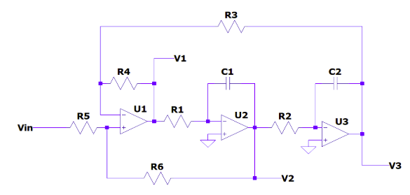

TP Semanal 4
Enunciado
Diseñar un filtro pasabajos Chebyshev para obtener una atenuación de 48 dB para frecuencias mayores a 900 Hz, con una atenuación máxima de 0.4 dB desde continua hasta 300 Hz. ( Ancho de Banda reducido para canal Sub Lows )
\[\alpha_{Max} [dB]\]
|
\[\alpha_{Min} [dB]\]
|
\[f_p [Hz]\]
|
\[f_s [Hz]\]
|
|---|---|---|---|
0,4 |
48 |
300 |
900 |
Determinar el orden del filtro y el parámetro ɛ.
Obtener la expresion completa de la Transferencia NORMALIZADA de T(s)
Obtener el diagrama de polos y ceros y graficar a mano alzada en forma cualitativa la respuesta de modulo y fase.
Sintetizar el circuito NORMALIZADO utilizando estructuras Kerwin–Huelsman–Newcomb (KHN, también conocido como Variable de Estado ) saliendo desde la salida V3 como indica el siguiente circuito de referencia:

BONUS
+10 💎 Simulación numérica en python
+10 💎 Simulación Circuital con los valores DESNORMALIZADOS ( cumpliendo la plantilla pedida )
+10 🍺 Presentación en jupyter notebook
Orden del Filtro y Parametro \(\epsilon\)
Dada la ecuacion:
Reemplazando obtengo \(\epsilon^2 = 0.096\)
El orden del filtro, lo obtengo iterando de la siguiente ecuacion:
Obtuve n = 5
Transferencia Normalizada
[4]:
import matplotlib
import matplotlib.pyplot as plt
import scipy.signal as sig
import sympy as sp
from IPython.display import display, Math
from pytc2.sistemas_lineales import bodePlot, tf2sos_analog, pretty_print_SOS, pzmap
N = 3
ALPHA_MAX = .5
# %matplotlib inline
# matplotlib.use('Qt5Agg')
z,p,k = sig.cheb1ap(N, ALPHA_MAX)
num, den = sig.zpk2tf(z,p,k)
sos_cheb = tf2sos_analog(num, den)
display(Math("T(s) = " + pretty_print_SOS(sos_cheb, mode='omegayq', displaystr=False)))
H1 = sig.TransferFunction(num, den)
fig1, axs = bodePlot(H1) # Obtener la figura y las subtramas
pzmap(H1)
plt.show()


Manuscrito
Se propone hallar la transferencia del circuito propuesto:
[9]:
from IPython.display import IFrame
IFrame("./tp4tc2.pdf", width="100%", height="600")
[9]:
Simulaciones
Normalizado


Desnormalizado
Se propone el siguiente circuito en el cual se aplico desnormalizacion de impedancia y frecuencia: